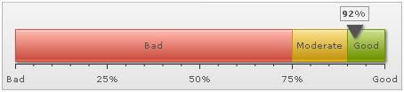
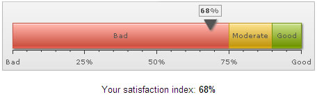

| Edit Mode |
The linear gauge in FusionWidgets XT suite can also act as an input control, allowing users to visually drag & change the value of pointer. Once the value is updated, it can be retrieved from the chart using client-side JavaScript. Here, we'll see how to do the same. |
| Setting editMode to 1 |
|
We need to tell the chart to switch the edit mode on. This can be done either at the global level using: |
|
This makes all the pointers present on the chart editable. Or, you can make individual pointer editable using: |
|
This makes the particular pointer on the chart editable. The user can now drag the pointer to change its value. |
| JavaScript Event & Retrieving value |
Once the user has changed the value of the gauge, the chart automatically calls the FC_ChartUpdated(DOMId) JavaScript function. You'll have to define this method in your HTML page and then write JavaScript code to retrieve the data using getData(index) or getDataForId(id) method. Let's quickly see an example. |
| An Example |
We'll build a simple example to let the user choose his satisfaction % using a linear gauge chart. Once he has selected the value, we'll simply display it within the HTML page. In your real-life application, you could use the return value to assign to a hidden form field and then submit the form to server-side scripts for processing. The chart will use the following XML: s |
<chart lowerLimit="0" upperLimit="100" lowerLimitDisplay="Bad" upperLimitDisplay="Good" palette="1" numberSuffix="%"
chartRightMargin="20" editMode="1" decimals="0">
<colorRange>
<color minValue="0" maxValue="75" code="FF654F" label="Bad"/>
<color minValue="75" maxValue="90" code="F6BD0F" label="Moderate"/>
<color minValue="90" maxValue="100" code="8BBA00" label="Good"/>
</colorRange>
<pointers>
<pointer value="92"/>
</pointers>
<styles>
<definition>
<style type="font" name="myValueFont" bgColor="F1f1f1" borderColor="999999"/>
</definition>
<application>
<apply toObject="Value" styles="myValueFont"/>
</application>
</styles>
</chart>
{
"chart": {
"lowerlimit": "0",
"upperlimit": "100",
"lowerlimitdisplay": "Bad",
"upperlimitdisplay": "Good",
"palette": "1",
"numbersuffix": "%",
"chartrightmargin": "20",
"editmode": "1",
"decimals": "0"
},
"colorrange": {
"color": [
{
"minvalue": "0",
"maxvalue": "75",
"code": "FF654F",
"label": "Bad"
},
{
"minvalue": "75",
"maxvalue": "90",
"code": "F6BD0F",
"label": "Moderate"
},
{
"minvalue": "90",
"maxvalue": "100",
"code": "8BBA00",
"label": "Good"
}
]
},
"pointers": {
"pointer": [
{
"value": "92"
}
]
},
"styles": {
"definition": [
{
"type": "font",
"name": "myValueFont",
"bgcolor": "F1f1f1",
"bordercolor": "999999"
}
],
"application": [
{
"toobject": "Value",
"styles": "myValueFont"
}
]
}
} |
| Here, we've defined 1 editable pointer (with ID as CS). When you run this chart, it will look as under: |
|  |
Let's now look at the HTML + JavaScript code required to retrieve data from this pointer when user changes the value. We create an HTML page with the following code. This page is present in Download Package > Code > LinearGauge > EditMode.html |
<html>
<head>
<title>FusionWidgets XT - Edit Mode</title>
<script type="text/javascript" src="../Charts/FusionCharts.js"></script>
<script language="javascript">
//FC_ChartUpdated method is called when user has changed pointer value.
function FC_ChartUpdated(DOMId){
//Check if DOMId is that of the chart we want
if (DOMId=="ChId1"){
//Get reference to the chart
var chartRef = FusionCharts(DOMId);
//Get the current value
var pointerValue = chartRef.getData(1);
//You can also use getDataForId method as commented below, to get the pointer value.
//var pointerValue = chartRef.getDataForId("CS");
//Update display
var divToUpdate = document.getElementById("contentDiv");
divToUpdate.innerHTML = "<span class='text'>Your satisfaction index: <B>" + Math.round(pointerValue) + "%</B></span>";
}
}
</script>
</head>
<body>
<div id="chart1div">
This text is replaced by the Flash movie.
</div>
<script type="text/javascript">
var chart1 = new FusionCharts("../Charts/HLinearGauge.swf", "ChId1", "450", "100", "0", "1");
chart1.setXMLUrl("EditMode.xml");
chart1.render("chart1div");
</script>
<div id="contentDiv">
<span class='text'>Please drag the pointer above to indicate your satisfaction index.
</div>
</body>
</html> |
|
Here, we've done the following:
FC_ChartUpdated is called whenever a pointer's value is updated. In this function we have done the following:
When the above code is executed, the chart renders in edit mode and the pointer can be dragged to any value. Whenever the pointer value is changed, the chart calls FC_ChartUpdated(DOMId) JavaScript function, which retrieves the new data using the getData(pointerIndex) method and displays this value in a DIV, as shown in the following image: |
|  |
Instead of getData(index) method, you can also use getDataForId(pointerId) method to retrieve pointer's value as under: var pointerValue = chartRef.getDataForId("CS");
Here, CS was the pointer ID we had specified in XML. FusionWidgets XT (v3.2) introduces two new events to track real-time updates on charts and gauges. The names of the two events are: RealtimeUpdateComplete and RealtimeUpdateError. RealtimeUpdateComplete event is raised when a real-time gauges or chart completes updating data. Example implementation:
FusionCharts("myChartId").addEventListener ("RealtimeUpdateComplete" ,
function(event, parameter)
{
alert( "Your satisfaction index: " + event.sender.getData(1) + "%" );
}
);
Existing JavaScript implementations using the FC_ChartUpdated event will continue to function without any problem. RealtimeUpdateError event is raised when error occurs while updating data in a real-time gauge or chart. This event passes the HTTP Status (as number) of the error occurred. Example implementation:
FusionCharts("myChartId").addEventListener ("RealtimeUpdateError" ,
function(event, parameter)
{
alert( "Problem occurred while updating real-time data. The error status code is" + parameter.httpStatus );
}
);
So, you just saw how easy it is to create editable linear gauges using FusionWidgets. |